이 Idleon 최적 카드 가이드는 스킬, 데미지, 희귀 드롭, EXP 획득을 최적화하는 카드 빌드를 설명합니다. 수백 가지 카드를 정리한 이 티어 리스트는 장착·파밍·업그레이드할 최선의 선택지를 제시합니다.
최적 Card Builds
아래의 게임 활동별 카드 빌드 예시는 World 4 Laboratory의 Omega Nanochip과 Omega Motherboard를 최대한 활용하기 위해 가장 강력한 카드를 왼쪽 상단 및 오른쪽 하단 슬롯에 배치합니다.
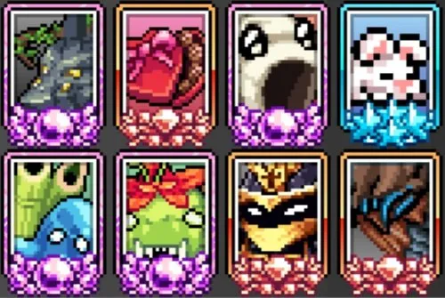
아래의 최적 선택지는 보유한 카드와 특정 목표에 따라 달라질 수 있으며, 대안 카드는 페이지 하단에 나와 있습니다. 또한 카드 시스템에서 획득을 최대화하기 위해 필요에 따라 카드 세트를 변경하는 것을 잊지 마세요.
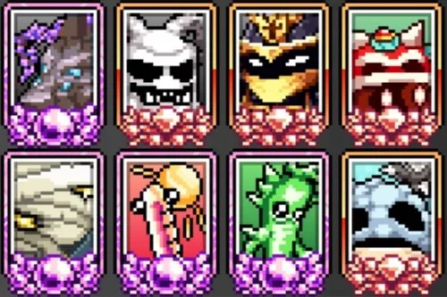
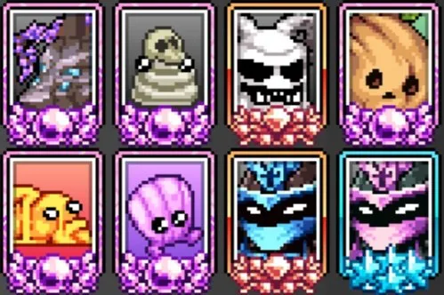
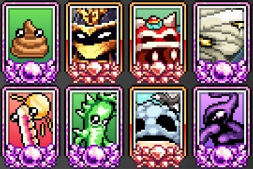
| 게임 활동 | 카드 빌드 예시 |
|---|---|
| 스킬링 (Skilling) — 효율(Efficiency) 중심* | 스킬링 카드 섹션 참조 |
| AFK 전투 (AFK Fighting) — AFK 획득 & 드롭률 | AFK 전투 카드 섹션 참조 |
| AFK 전투 (AFK Fighting) — AFK 획득, 멀티킬 & 데미지 | AFK 전투 카드 섹션 참조 |
| Active(직접 플레이) 전투 (Active Fighting) — 크리스탈 확률 & 드롭률 | Active 전투 카드 섹션 참조 |
| Active 전투 (Active Fighting) — 드롭률 | Active 전투 카드 섹션 참조 |
| Active 전투 (Active Fighting) — EXP | Active 전투 카드 섹션 참조 |
| Active 전투 (Active Fighting) — 데미지 | Active 전투 카드 섹션 참조 |
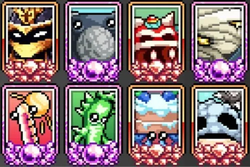
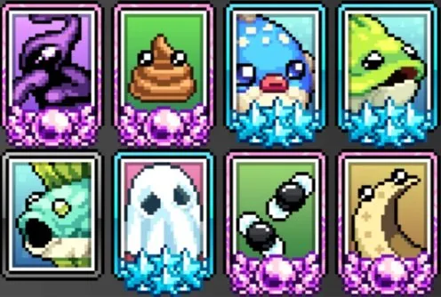
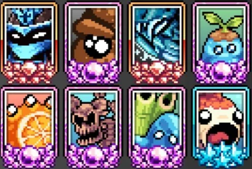
*최적 스킬링 카드는 The Rift 레벨 16의 패시브 업그레이드를 잠금 해제했는지 여부에 따라 달라집니다. 이 메커니즘을 잠금 해제하지 않은 경우 해당 자원 유형의 카드를 사용하는 것이 최선입니다(예: 대부분의 나무 자르기 카드는 나무 자르기를 향상시킴). 음식 효과가 높은 플레이어는 광질 및 나무 자르기에서 스킬 속도가 62/분으로 상한이 있으므로 Chocco Box를 제외할 수 있습니다. 부스트 음식이 적용되지 않는 스킬에서는 모든 플레이어가 Chocco Box를 제거해야 합니다.
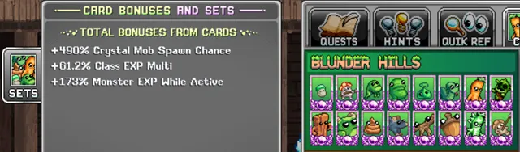
Cards 메커니즘 개요
- 카드는 몬스터와 자원에서 드롭되며 장착 시 자체 보너스를 제공합니다. 수집한 카드 수에 따라 효력이 강해지며 현재 별 등급은 최대 6개입니다.
- 카드 파밍을 최대화하려면 카드 드롭률, 드롭률, 그리고 일반적으로 처치 수 또는 자원 획득을 늘리는 데 집중하세요.
- 플레이어는 카드 슬롯 4개로 시작하며 Gem Shop에서 추가로 4개를 잠금 해제할 수 있습니다.
- Card Sets(카드 세트)는 비슷한 테마의 카드 그룹으로, 장착 시 추가 보너스를 제공합니다(최대 하나씩).
- 플레이어는 첫 번째 캐릭터 레벨 40에서 두 번째 카드 프리셋을 잠금 해제하여 카드 설정을 빠르게 전환할 수 있으며, Gem Shop에서 추가 프리셋을 구매할 수 있습니다.
- 일부 카드는 "(passive)"로 표시되어 장착하지 않아도 보너스를 항상 제공합니다. The Rift(World 4)에서는 대부분의 스킬링 카드가 패시브로 바뀌며 "(P)"로 표시됩니다.
- World 4에서는 Laboratory 칩을 획득하여 왼쪽 상단 및 오른쪽 하단 카드의 효과를 두 배로 높일 수 있습니다.
스킬링 Cards & Card Sets
스킬링 시 목표에 따라 다음 스탯을 극대화하세요.
- AFK 스킬링 획득
- 음식 효과 (소시지 로그프라이나 아이싱 아이언바이트 등 부스트 음식의 이점 증가)
- 효율(Efficiency) — 자원 획득 중심
- 스킬링 경험치 — 스킬 레벨 중심
- 드롭률 — 카드, 조각상, 자원의 희귀 드롭 중심
- 카드 드롭률 — 스킬링 카드 중심
- 모든 스탯 % — 나머지 슬롯에서 소폭 효율 향상
아래 표는 World 4 마지막에 잠금 해제되는 패시브로 전환되는 자원 특화 카드를 포함하지 않습니다. 이전에는 광질, 골드 광석처럼 자원과 연관된 카드가 항상 해당 스킬링 카드임을 쉽게 알 수 있으므로 각 자원의 스킬링 카드를 추가하세요.
| 카드 | 효과 | Card Set |
|---|---|---|
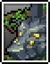 Amarok | 스킬 AFK 획득률 | Bosses and Nightmares |
 Bunny Bunny | 스킬 AFK 획득률 | Hard Resources |
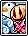 Hard Resources (Set) | 스킬 AFK 획득률 | N/A |
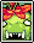 Mama Troll | 스킬 AFK 획득률 | Spirited Valley (World 6) |
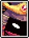 Samurai Guardian | 모든 AFK 획득률 (패시브) | Spirited Valley (World 6) |
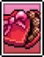 Chocco Box | 부스트 음식 효과 | Events |
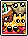 Yum-Yum Desert (Set) | 모든 음식 효과 | N/A |
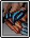 Chaotic Troll | 모든 스킬 효율 | Bosses and Nightmares |
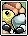 Easy Resources (Set) | 스킬 효율 | N/A |
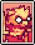 Crystal Capybara | 스킬 효율 (패시브) | Smoulderin' Plateau (World 5) |
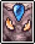 Chaotic Efaunt | 스킬 EXP 획득 | Bosses and Nightmares |
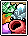 Medium Resources (Set) | 스킬 EXP 획득 | N/A |
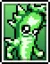 Crystal Carrot | 드롭률 | Blunder Hills (World 1) |
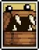 Mimic | 드롭률 | Yum Yum Desert (World 2) |
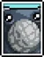 Bop Box | 드롭률 | Frostbite Tundra (World 3) |
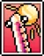 Mister Brightside | 드롭률 | Smoulderin' Plateau (World 5) |
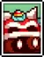 Minichief Spirit | 드롭률 | Spirited Valley (World 6) |
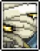 King Doot | 드롭률 | Bosses and Nightmares |
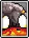 Domeo Magnus | 드롭률 (패시브) | Bosses and Nightmares |
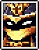 Emperor | 드롭률 | Bosses and Nightmares |
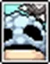 Coralcave Guardian | 드롭률 멀티 | Shimmerfin Deep (World 7) |
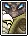 Bosses & Nightmares (Set) | 데미지, 드롭률 & EXP | N/A |
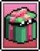 Giftmas Blobulyte | 드롭률 | Events |
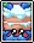 Mr Blueberry | 드롭률 | Events |
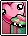 Events (Set) | 드롭률 | N/A |
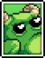 Gigafrog | 카드 드롭률 | Blunder Hills (World 1) |
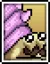 Snelbie | 카드 드롭률 | Yum Yum Desert (World 2) |
| Sir Stache | 카드 드롭률 | Frostbite Tundra (World 3) |
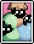 Egggultye | 카드 드롭률 | Events |
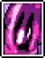 Stilted Seeker | 모든 스탯 | Hyperion Nebula (World 4) |
| Tremor Wurm | 모든 스탯 | Smoulderin' Plateau (World 5) |
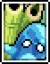 River Spirit | 모든 스탯 | Spirited Valley (World 6) |
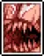 Blighted Chizoar | 모든 스탯 | Bosses and Nightmares |
AFK 전투 Cards & Card Sets
AFK 전투 시 목표에 따라 다음 스탯을 극대화하세요.
- AFK 전투 획득
- 멀티킬 — 데스노트 또는 포털 처치 수 극대화 중심
- 드롭률 — 희귀 드롭 및 몬스터 카드 중심
- 카드 드롭률 — 몬스터 카드 중심
- 데미지 — 새 멀티킬 티어 도달을 위해
| 카드 | 효과 | Card Set |
|---|---|---|
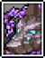 Chaotic Amarok | 전투 AFK 획득률 | Bosses and Nightmares |
| Demented Spiritlord | 전투 AFK 획득률 | Bosses and Nightmares |
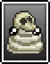 Boop | 전투 AFK 획득률 | Bosses and Nightmares |
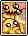 Smoulderin' Plateau (Set) | 전투 AFK 획득률 | N/A |
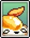 Royal Egg | 전투 AFK 획득률 (패시브) | Spirited Valley (World 6) |
| Samurai Guardian | 모든 AFK 획득률 (패시브) | Spirited Valley (World 6) |
| Clammie | 티어당 멀티킬 | Hyperion Nebula (World 4) |
| Suggma | 티어당 멀티킬 | Smoulderin' Plateau (World 5) |
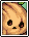 Woodlin Spirit | 티어당 멀티킬 | Spirited Valley (World 6) |
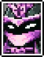 Sovereign Emperor | 티어당 멀티킬 | Bosses and Nightmares |
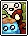 Spirited Valley (Set) | 티어당 멀티킬 | N/A |
| Crystal Carrot | 드롭률 | Blunder Hills (World 1) |
| Mimic | 드롭률 | Yum Yum Desert (World 2) |
| Bop Box | 드롭률 | Frostbite Tundra (World 3) |
| Mister Brightside | 드롭률 | Smoulderin' Plateau (World 5) |
| Minichief Spirit | 드롭률 | Spirited Valley (World 6) |
| King Doot | 드롭률 | Bosses and Nightmares |
| Domeo Magnus | 드롭률 (패시브) | Bosses and Nightmares |
| Emperor | 드롭률 | Bosses and Nightmares |
| Coralcave Guardian | 드롭률 멀티 | Shimmerfin Deep (World 7) |
| Bosses & Nightmares (Set) | 데미지, 드롭률 & EXP | N/A |
| Giftmas Blobulyte | 드롭률 | Events |
| Mr Blueberry | 드롭률 | Events |
| Events (Set) | 드롭률 | N/A |
| Gigafrog | 카드 드롭률 | Blunder Hills (World 1) |
| Snelbie | 카드 드롭률 | Yum Yum Desert (World 2) |
| Sir Stache | 카드 드롭률 | Frostbite Tundra (World 3) |
| Egggultye | 카드 드롭률 | Events |
| Snowman | 총 데미지 | Frostbite Tundra (World 3) |
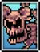 Bloodbone | 총 데미지 | Frostbite Tundra (World 3) |
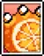 Citringe | 총 데미지 | Smoulderin' Plateau (World 5) |
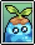 Sprout Spirit | 총 데미지 | Spirited Valley (World 6) |
| Dr Defecaus | 총 데미지 | Bosses and Nightmares |
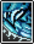 Blitzkrieg Troll | 총 데미지 | Bosses and Nightmares |
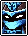 Chaotic Emperor | 총 데미지 멀티 | Bosses and Nightmares |
| Doodlefish | 총 데미지 멀티 | Shimmerfin Deep (World 7) |
Active 전투 Cards & Card Sets
Active(직접 플레이) 전투 시 목표에 따라 다음 스탯을 극대화하세요.
- 크리스탈 스폰 확률
- 드롭률 — 희귀 드롭 중심
- 경험치 — 캐릭터 레벨 중심
| 카드 | 효과 | Card Set |
|---|---|---|
 Poop Poop | 크리스탈 몹 스폰 확률 | Blunder Hills (World 1) |
| Demon Genie | 크리스탈 몹 스폰 확률 | Hyperion Nebula (World 4) |
| Mimic | 드롭률 | Yum Yum Desert (World 2) |
| Bop Box | 드롭률 | Frostbite Tundra (World 3) |
| Mister Brightside | 드롭률 | Smoulderin' Plateau (World 5) |
| Minichief Spirit | 드롭률 | Spirited Valley (World 6) |
| King Doot | 드롭률 | Bosses and Nightmares |
| Domeo Magnus | 드롭률 (패시브) | Bosses and Nightmares |
| Emperor | 드롭률 | Bosses and Nightmares |
| Coralcave Guardian | 드롭률 멀티 | Shimmerfin Deep (World 7) |
| Bosses & Nightmares (Set) | 데미지, 드롭률 & EXP | N/A |
| Giftmas Blobulyte | 드롭률 | Events |
| Mr Blueberry | 드롭률 | Events |
| Events (Set) | 드롭률 | N/A |
| Moonmoon | Active 중 몬스터 EXP | Yum Yum Desert (World 2) |
| Fly | Active 중 몬스터 EXP | Yum Yum Desert (World 2) |
| Ghost | Active 중 몬스터 EXP | Events |
| Crystal Crabal | 몬스터로부터 EXP | Bosses and Nightmares |
| Efaunt | 몬스터로부터 EXP | Bosses and Nightmares |
| Crystal Cattle | 몬스터로부터 EXP | Frostbite Tundra (World 3) |
| Owlio | 몬스터로부터 EXP | Hard Resources |
| Lampar | 몬스터로부터 EXP | Smoulderin' Plateau (World 5) |
| Chaotic Kattlekruk | 몬스터로부터 EXP | Bosses and Nightmares |
| Eamsy Earl | 클래스 EXP 멀티 | Shimmerfin Deep (World 7) |
| Pufferblob | 클래스 EXP 멀티 | Shimmerfin Deep (World 7) |
| Kelpfish | 클래스 EXP 멀티 | Shimmerfin Deep (World 7) |
| Shimmerfin Deep (Set) | 클래스 EXP 멀티 | N/A |